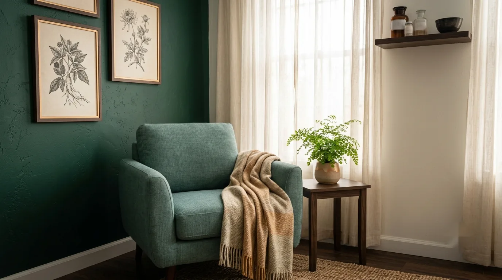
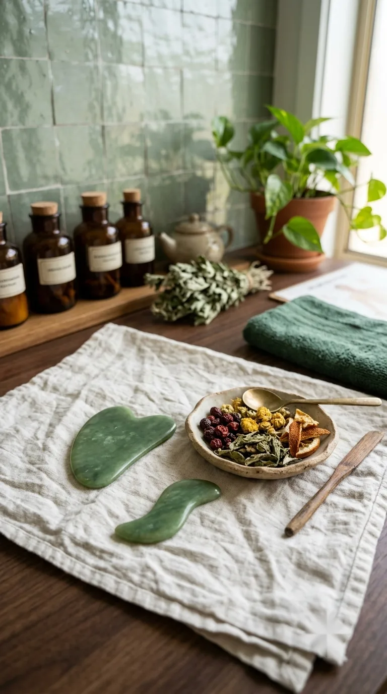
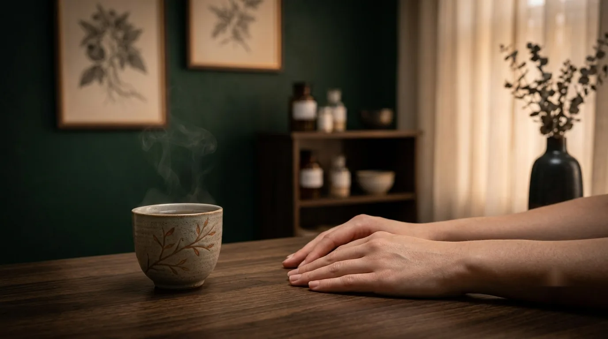

Nervous system support
Acupuncture for Anxiety
A calm, psychology-informed approach that may help support people experiencing anxiety, alongside your other care.

- Common signs
- Racing thoughts, tension
- Best for
- Alongside your other care
- Hours
- Tue 12–5pm
- Where
- Mermaid Beach
How we approach it
Every appointment starts with listening, at whatever depth feels comfortable for you. A Chinese medicine assessment considers your sleep, energy, physical tension and general wellbeing, and treatment is shaped around that picture rather than a fixed protocol.
Sessions are unhurried and explained as we go, so there are no surprises. If anything doesn't feel right, at any point, you're free to say so and we'll adjust.
What's included
- A gentle, non-judgemental conversation about how you've been
- A Chinese medicine assessment shaped around your presentation, not a checklist
- Treatment explained clearly before it begins, at a pace that suits you
- Care that sits alongside your GP or mental health support, never in place of it
Treatments are provided by an AHPRA-registered practitioner. New patients welcome.

Further reading
Anxiety, stress and sleep often overlap.
If a wound-up nervous system or disrupted sleep is also part of the picture, our pages on acupuncture for stress and acupuncture for sleep may be useful too.

Good to know
Common questions.
Can acupuncture treat anxiety?
Acupuncture is not a treatment for anxiety disorders and isn't a substitute for therapy or medication. Some people find it may help support a calmer nervous system alongside their other care, and that's the most it should ever be described as.
Will you ask me to talk about why I'm anxious?
Only as much as you're comfortable with. We'll ask about your general wellbeing, sleep, stress and physical symptoms so the assessment is useful, but you're never required to go into detail you'd rather not share.
Should I still see a psychologist or my GP?
Yes, if anxiety is significantly affecting your life, please continue seeing your GP or a mental health professional. Acupuncture can sit alongside that care, but it is not a replacement for it.
What if I feel anxious about the treatment itself?
Completely normal, and common. We'll explain each step before it happens, start gently, and you're always free to ask us to stop or slow down.
How many sessions before I'd notice anything?
There's no fixed timeline, and we won't promise one. We'll check in with you regularly and adjust the plan based on how you're finding it, not a preset course of treatment.
Designed to help you feel at ease
Ready when you are.
If you've never had acupuncture before, it's completely normal to have questions. Your first appointment is unhurried, giving us time to understand your concerns and ensure you feel comfortable before treatment begins.